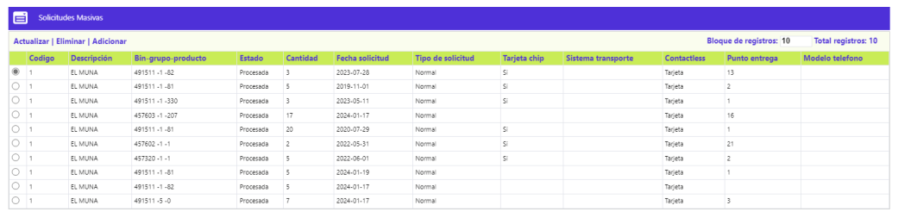

Solicitudes masivas |
Mediante esta opción la entidad tiene la posibilidad de registrar en el sistema las solicitudes de tarjetas débito no personalizadas con destino a las diferentes sucursales con el fin de poder atender oportunamente las necesidades de sus clientes.
Al ingresar a la opción se despliega un wizard de dos pasos y la primera página contiene un filtro que permite consultar las solicitudes por sucursal y/o producto.
Descripción de campos
Sucursal |
Campo con lista de valores que permite seleccionar la sucursal de la entidad a la que pertenecen las solicitudes masivas que se desea consultar. |
|
Producto |
Este campo contiene una lista de valores que permite seleccionar el producto débito al que corresponden las solicitudes masivas a consultar. |
Una vez seleccionadas la sucursal y/o el producto mediante el botón buscar se muestran en el formulario los registros que coincidan con los criterios ingresados y por defecto al entrar a la opción se muestran todas las solicitudes existentes actualmente.
El formulario posee el botón especial Aplicar todas que permite procesar todas las solicitudes y enviar a la etapa de plásticos en realce los números de tarjetas generados para que se pueda hacer el realce de las tarjetas.

Descripción de campos
Sucursal |
Campo que muestra las sucursales de la entidad a las que pertenecen las diferentes solicitudes masivas. |
|
Producto |
Este campo despliega el producto débito que se está solicitando para la sucursal. |
Fecha solicitud |
Campo en formato YYYY-MM-DD la fecha en la cual se registró en el sistema la solicitud masiva de tarjetas débito. |
Solo consulta |
Este campo muestra como valor 'Normal' para indicar que la tarjeta es transaccional y emite plástico. |
Cantidad solicitada |
Campo que contiene la cantidad de tarjetas que por producto se solicitan para la sucursal. |
Procesada |
En este campo se indica Si o No la solicitud ya fue procesada, es decir, si ya se generaron los números de tarjetas y enviaron a plásticos en realce. |
Selección |
Campo tipo check que permite marcar las solicitudes que se desea procesar en caso que no se desee procesar todas las solicitudes existentes. |
El formulario cuenta con las opciones Eliminar y Adicionar.
Adicionar: si el usuario invoca la opción Adicionar, se despliega un nuevo formulario con los siguientes campos.
Descripción de campos
Tipo solicitud |
Campo obligatorio con lista de valores que permite seleccionar el producto débito del cual se está solicitando generación masiva de tarjetas. La lista muestra solo aquellos productos que tienen parametrizado que si emiten plástico. |
|
Sucursal |
Este campo obligatorio contiene lista de valores de la que se selecciona la sucursal que solicita o para la cual van dirigidos los plásticos a emitir masivamente. |
|
Cantidad solicitada |
Campo numérico obligatorio en el que se debe registrar la cantidad de tarjetas masivas solicitadas. |
Como se mencionó anteriormente, si el actor no desea procesar todas las solicitudes, puede marcar aquellas que desea gestionar y mediante el botón contenido en el wizard se desplaza a la segunda página donde se muestran las solicitudes seleccionadas.
La segunda página contiene una casilla que permite seleccionar aquellas solicitudes que ya no se desea procesar.
Botones especiales
Aplicar todas : mediante este botón se permite el procesamiento de todas las solicitudes masivas existentes y cuyo estado sea sin procesar, de acuerdo con lo indicado para la misma en el campo Procesada. Una vez efectuado el proceso, en la opción de plásticos en realce se deben mostrar los números de tarjeta generados para permitirle al usuario continuar con el proceso de realce de los plásticos y su posterior envío a cada una de las sucursales.